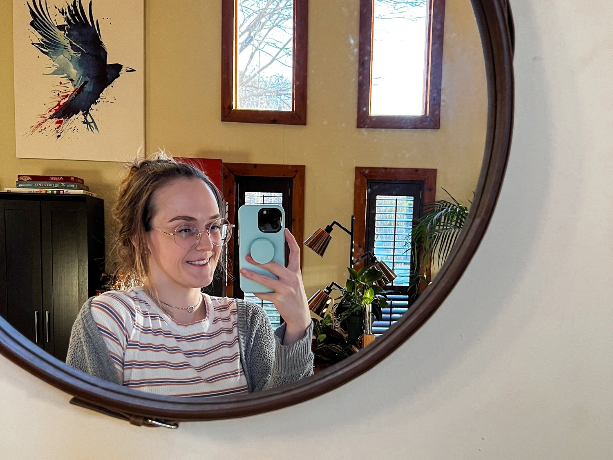
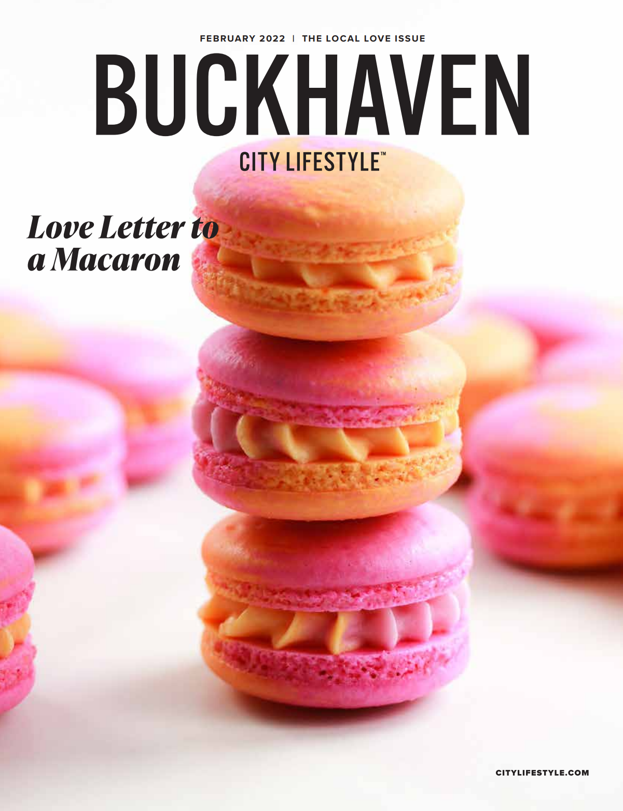
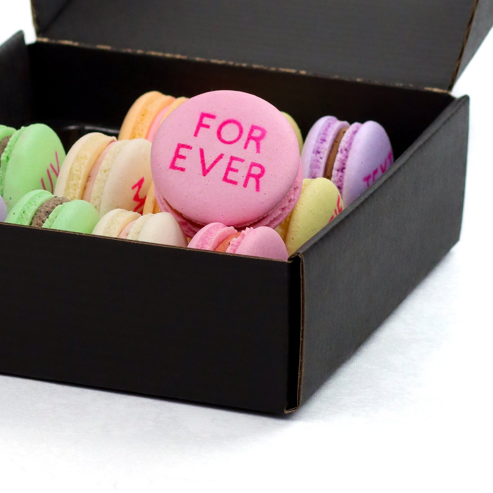

Finding balance (through French macarons)
I feel like I’ve been really finding my groove these past couple months, and I’m reaching a point of balance that I’ve always hoped for but never quite realized. A big part of that has been changes in how my business functions, allowing me more grace & flexibility.
If you missed the change, I stopped doing special events with my macarons entirely, and I am now exclusively selling macarons online here & shipping (hello ecommerce world!). Although the decision was hard (it took me months to actually commit to it - no more macaron towers sadly), time has proven that it was really the best decision for me and the business. Events made me exhausteddd always anticipating the next deadline, working weekends, and I found it really creatively draining to bounce from one project to the next.
Now, I am sticking to less frequent, but larger macaron releases where I can put more devotion into each one at a single time. I feel like I can apply myself to a fully-baked vision rather than half-baked.
This change has brought a lot more balance in my life in general, allowing me to actually take weekends off and stick to weekday work hours. But honestly, the change has helped me realize what “slowing down” can really mean, and the benefits that it provides. As a type-A perfectionist, I’ve always found it unproductive and anxiety-inducing to “take it easy”… but now I’m seeing that it allows for other, less tangible areas to flourish (letting ideas brew, allowing room for failure in order to grow, staying more connected, being able to sit down and write this, to name a few).
This is something that I’ve honestly needed for over a decade of my life, and I feel so grateful to be finding it now. The Kim who started this blog 10 years ago seriously couldn’t imagine this. I also never would have predicted that French macarons would be the source of my lesson-learned to “fill your cup first” but here we are! Those divas most certainly can’t be managed without my own head on straight first, hahaha. At the end of the day, it’s a lesson of understanding & sticking to limits & boundaries - which I’m learning I’ve never respected until recent.
Sooo my plan now is to continue releasing macaron boxes as frequently as I can without sacrificing the execution of them (the last was Valentine’s, and the next will be St. Patrick’s Day)! I am so grateful to everyone who has supported my business this far, and for everyone that will keep supporting in any way. I wouldn’t be busy or growing without you! And I always hope to provide a little pleasure how I can in return. I’m so excited.
cheers
Sweet regards,
Kim
p.s. just wanted to share some recent photos from the month - an incredible feature of my macaron photography on the cover of Buckhaven City Lifestyle, and one of my favorite shots from the Valentine’s Day Macaron Collection that sold out in an hour!!! Huge huge thank you for the blessings. It was such an incredible experience for me to watch the orders come in (I seriously did not anticipate it!), and I hope to make the future releases even better!
p.p.s. I recommend singing up for my mailing list if you want be the first to know of new macaron releases & promotions!


